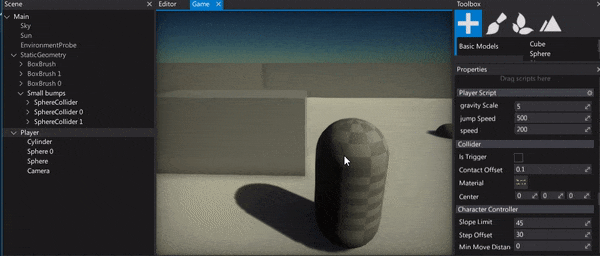
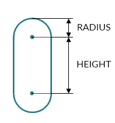
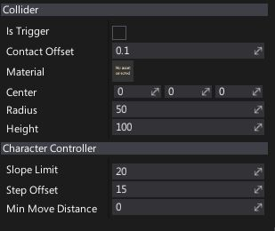

Character Controller

The character controller is an actor type used for the player objects to provide collision-based physics but also to allow for more customizations dedicated to game characters (player or NPCs). It's a common choice for first-person and third-person games.
Character volume
The character uses a capsule, defined by a center position, a vertical height and a radius. The height is the distance between the two sphere centers at the end of the capsule. For example, the capsule has better behavior when climbing stairs.

Auto stepping
Without auto-stepping it is easy for a character to get stuck against slight elevation changes in a ground mesh. It feels unnatural because in the real world a person would just cross over these small obstacles without thinking about it.
You can adjust auto-stepping behaviour by using CharacterController.SlopeLimit and CharacterController.StepOffset properties.
Properties

| Property | Description |
|---|---|
| Is Trigger | Not used. Derived from the Collider base class. |
| Contact Offset | Colliders whose distance is less than the sum of their ContactOffset values will generate contacts. The contact offset must be positive. Contact offset allows the collision detection system to predictively enforce the contact constraint even when the objects are slightly separated. |
| Material | The physical material used to define the collider physical properties. |
| Center | The center of the collider, measured in the object's local space. |
| Radius | The radius of the sphere, measured in the object's local space. It will be scaled by the actor's world scale. |
| Height | The height of the capsule, measured in the object's local space. It will be scaled by the actor's world scale. |
| Slope Limit | Limits the collider to only climb slopes that are less steep (in degrees) than the indicated value. |
| Non Walkable Mode | Specifies the non-walkable mode for the character controller. |
| Step Offset | The character will step up a stair only if it is closer to the ground than the indicated value. This should not be greater than the Character Controller’s height or it will generate an error. |
| Min Move Distance | The minimum travelled distance to consider. If travelled distance is smaller, the character doesn't move. This is used to stop the recursive motion algorithm when remaining distance to travel is small. |